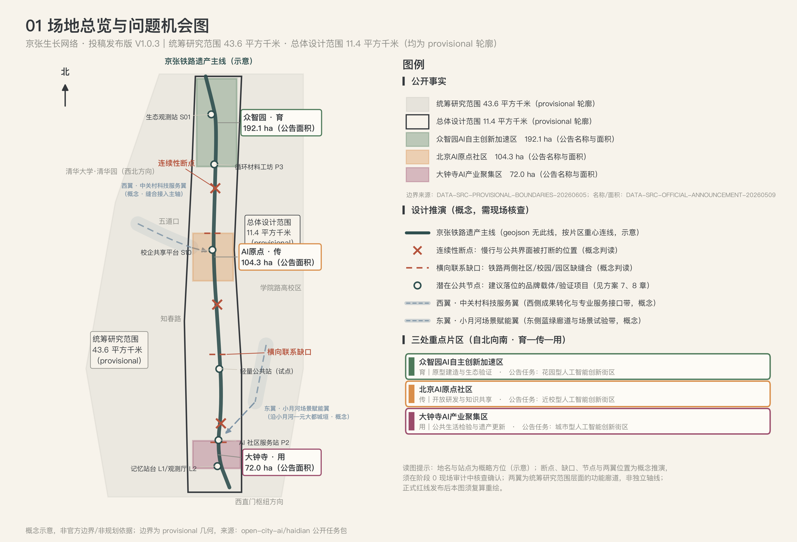
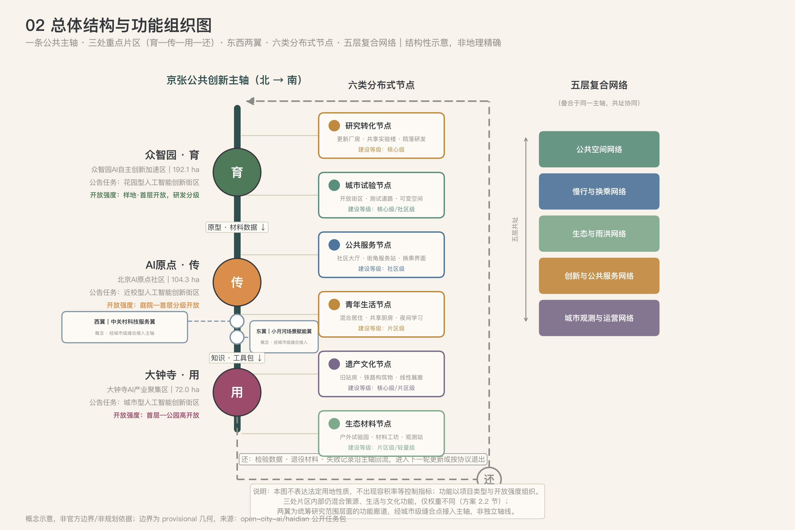
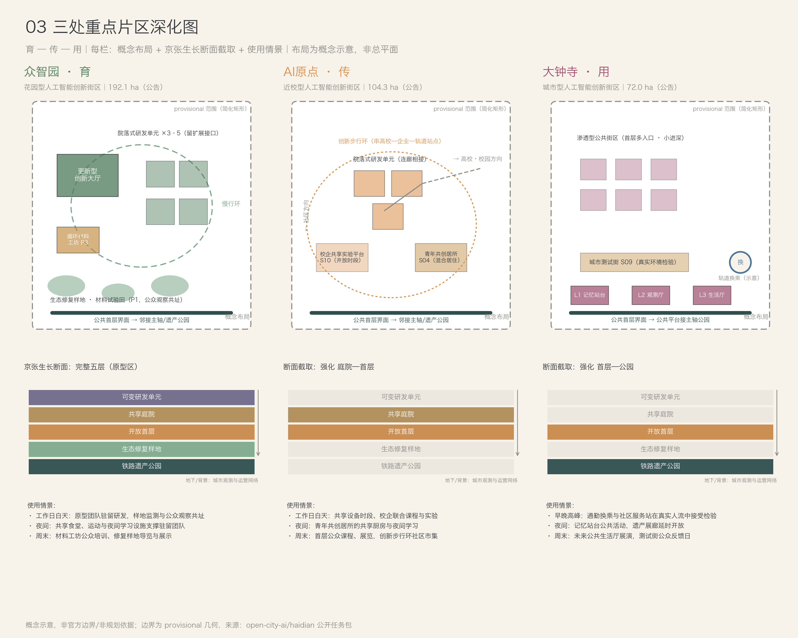
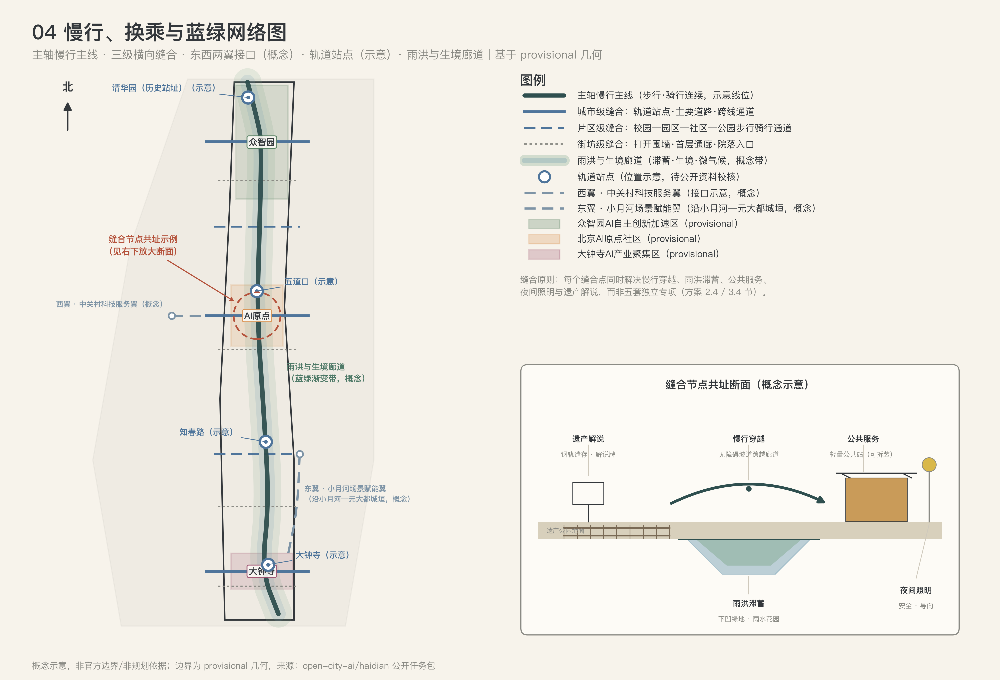
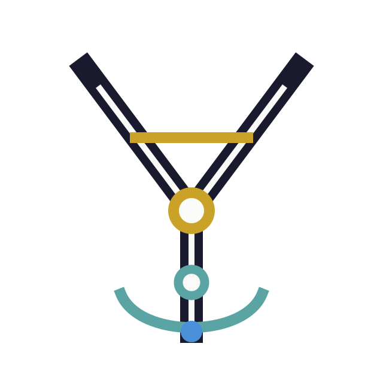
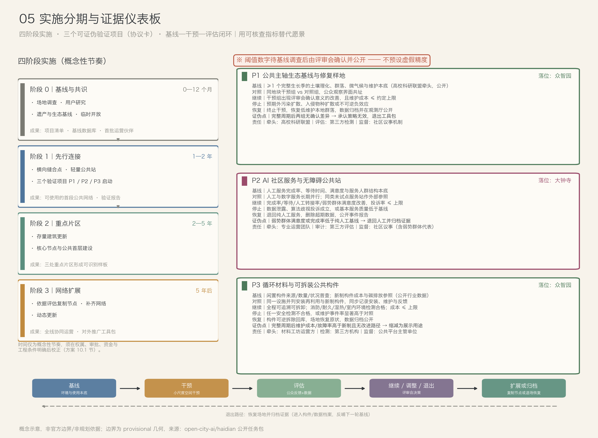

让创新进入城市日常
发布状态
公开共创建议 · 非正式规划 · 非工程结论 · 非官方批准
2026-08-26
沿京张，让城市不再一次建成，而在持续交换中更新。
它缝合了哪一处具体的断裂——铁路两侧、院墙内外、新老社区？
它让什么资源在哪些主体之间真实流动——空间、设备、材料、知识、数据？
它留下了什么接口，使下一阶段的扩展、调整或退出成为可能？
| 问题 | 常见方案局限 | 本方案回应 |
|---|---|---|
| 铁路廊道连续但横向联系不足 | 把公园只做成线性景观 | 高频横向缝合点与跨界公共界面 |
| 创新资源密集但彼此封闭 | 园区校园各自为独立单元 | 共享设施、联合试验、成果展示网络 |
| AI 场景容易成为设备陈列 | 追求短期"黑科技"可视化 | 聚焦公共服务与真实使用闭环 |
| 遗产展示与当代生活脱节 | 保护对象孤立、路径单一 | 遗产空间转化为公共客厅与创新载体 |
| 建成后运营动力不足 | 先造空间、后找内容 | 项目、运营主体与评估指标同步进入设计 |

统筹研究范围 43.6 km² · 总体设计范围 11.4 km² · 三处重点片区 368.4 ha（均为 provisional 轮廓）
网络层之间共址协同：一个横向缝合点同时解决慢行穿越、雨洪滞蓄、公共服务、夜间照明与遗产解说，而不是五套独立专项工程。

一条公共主轴 · 育—传—用—还 · 东西两翼 · 六类分布式节点 · 五层复合网络（结构性示意，非地理精确）
众智园AI自主创新加速区 · 192.1 ha
把生态样地、材料试验田和原型建造场做成街区的日常首层——"制造与验证未来"成为可观看的公共景观。
北京AI原点社区 · 104.3 ha
让高校院所的知识生产与社区日常互相可见、互相可用，而不是隔院墙相望。
大钟寺AI产业聚集区 · 72.0 ha
任何 AI 服务和空间原型，只有在这里被不用智能手机的居民真正用起来，才算成立。
片区名称与面积依据征集公告（DATA-SRC-OFFICIAL-ANNOUNCEMENT-20260509）；边界为 provisional 几何，正式红线发布后复算。

概念布局 + 京张生长断面截取 + 日夜与工作日/周末使用情景（概念示意，非总平面）
| 节点类型 | 空间载体 | 核心功能 | 建设等级 |
|---|---|---|---|
| 研究转化节点 | 更新厂房、共享实验楼、院落式研发单元 | 联合研发、原型制作、技术服务 | 核心级 |
| 城市试验节点 | 开放街区、测试道路、可变公共空间 | 真实场景测试、公众参与、评估展示 | 核心/社区级 |
| 公共服务节点 | 社区大厅、街角服务站、换乘界面 | 教育、健康、政务、无障碍服务 | 社区级 |
| 青年生活节点 | 混合居住、共享厨房、学习空间 | 居住、社交、创业与夜间活力 | 片区级 |
| 遗产文化节点 | 旧站房、铁路构筑物、线性展廊 | 记忆展示、公共教育、文化活动 | 核心/片区级 |
| 生态材料节点 | 户外试验园、材料工坊、观测站 | 生境监测、修复试验、循环建造展示 | 片区/轻量级 |
不同区段截取不同片段：众智园五层完整出现；AI 原点强化庭院—首层；大钟寺强化首层—公园。断面即判准的图面形态：说不出"交换发生在哪一层"的设计不进入深化。
既有厂房适应性再利用；中央共享大厅连接实验、路演、展览与制造；独立机电模块适应团队变化。
小尺度研发楼围合共享庭院；首层共享、上层可分可合；连廊衔接校园、园区与主轴。
首层多入口、小进深、高可见度；内部步行与周边社区连续，不形成封闭园区。
可拆装结构、标准化接口、低基础干预；先作试点部署，依据使用数据调整位置与功能。
清晰结构网格 · 线性站台与跨线构筑物 · 砖钢木与再利用构件的新旧可读 · 标志性来自公共活动和结构秩序，而非一次性异形表皮。

三级横向缝合 · 每个缝合点同时解决慢行穿越、雨洪滞蓄、公共服务与遗产解说
社区居民 —— 便捷服务、环境品质、隐私
青年科研人员与学生 —— 低成本工作、短住、设备共享
初创及企业团队 —— 真实场景验证与成果展示
高校与科研机构 —— 跨机构平台、长期样地
儿童、老人及残障使用者 —— 无障碍、低认知负担
访客与国际合作机构 —— 清晰叙事、可理解的示范
每个场景明确使用者、空间载体、运营主体、数据边界和退出条件；维护运营人员作为隐含第七类用户进入后台动线设计。
每个构件携带可扫码阅读的来源故事：来自哪一段铁路、哪一栋建筑、经过几次再生——京张记忆存在于市民每天使用的座椅、雨棚与展架中。
| 项目包 | 空间载体 | 合作主体 | 公共回报 |
|---|---|---|---|
| E01 共享实验设施 | 创新大厅、研发庭院 | 高校、科研机构、企业 | 开放设备时段、公众课程 |
| E02 城市真实场景测试 | 测试街、社区服务站 | 企业、社区、主管单位 | 结果公开、问题退出机制 |
| E03 青年驻留与共创 | 青年居所、共享首层 | 高校、基金会、运营方 | 社区课题、人才留驻 |
| E04 循环建造平台 | 材料工坊、更新建筑 | 设计机构、施工企业 | 材料护照、构件库、公众培训 |
| E05 遗产开放档案 | 记忆站台、数字档案室 | 档案机构、社区、文化团队 | 公众可访问档案与口述史 |
| E06 公共价值采购 | 分布式节点、线上平台 | 公共部门、企业、第三方评估 | 以可验证公共成效作为续约依据 |
统一开放时段、数据记录、成果归档与年度评估规则——空间共享不停留在名义层面。
P1 · 众智园
不少于一个生长季的土壤、生境、微气候基线；干预组与对照组同地块并置。
证伪点 完整周期后干预组无确认意义的改善——公开承认无效，策略退出工具包。
P2 · 大钟寺
人工与数字服务长期并行；数据最小化、人工兜底、可退出。
证伪点 弱势群体满意度低于纯人工基线——承认 AI 介入不成立，退回人工模式。
P3 · 众智园工坊
再利用构件与新制构件并列安装、同步记录；消防耐久检测为前置门槛。
证伪点 维护成本高于新制对照且无改进路径——缩减至展示用途，不作规模推广。
阈值类数字在基线调查完成前一律留空，由评审会确认并公开——不预设虚假精度。王阿姨不需要知道什么是大模型，她的等待时间决定这套系统是否继续存在。

京张双轨 + “人”字分叉 + 育传用还节点回路；原创纯矢量几何。
墨蓝主轴、铜金交换、青瓷回流、信号蓝生长接口；单色统一黑或白。
印刷 ≥18 mm，屏幕 ≥72 px；净空 ≥ 中心节点直径；禁止拉伸、旋转、阴影。
主标题 Noto Serif CJK SC 700；副标题 IBM Plex Mono 500；约 3:1。
只继承轨道线、节点与色彩层级作为导向语法，服从母标。
母标 + 活动名称 + 年份；L1–L3 仅以名称与节点色区分，不另造主标。
从哪里来 · 如何认识当下 · 共同走向哪里：L1 京张记忆站台、L2 城市智能观测厅、L3 未来公共生活厅共同承载母品牌，不各自建立竞争性标识。
AI 的角色限定为辅助识别、预测、匹配和评估；重要公共决策保持可解释和人工负责。
数据边界：采集对应明确公共目的；优先匿名聚合数据；不以算法评分替代公共服务资格判断。
场景上线前明确责任主体、保留期限、申诉与退出机制；观测厅公开指标定义、数据时间与不确定性。
| 阶段 | 节奏 | 主要动作 | 阶段成果 |
|---|---|---|---|
| 0 基线与共识 | 0—12 个月 | 场地调查、遗产与生态基线、临时开放 | 项目清单、基线数据库、首批运营伙伴 |
| 1 先行连接 | 1—2 年 | 横向缝合点、轻量公共站、三个验证项目 | 首段可用公共网络与验证报告 |
| 2 重点片区 | 2—5 年 | 存量更新、核心节点与公共首层建设 | 三处重点片区形成可识别样板 |
| 3 网络扩展 | 5 年后 | 依评估复制节点、补齐网络、动态更新 | 全线协同运营与对外推广工具包 |
时间为概念性节奏，需在权属、审批、资金与工程条件明确后校正。

四阶段实施 · 三个可证伪验证项目协议卡 · 基线—干预—评估—扩展闭环
| 治理/组件 | 规则 | 空间映射 | 退出 |
|---|---|---|---|
| 候选展示 | 公共价值标准 → 开放提名 → 证据审核 → 异议期；候选不等于授牌或机构背书 | L1 记忆档案 · L2 数据与失败档案 · L3 开放作品 | 年度复核；证据失效、争议未解或公共价值不成立即撤下并留更正记录 |
| H 展示档案 | 大字高对比结论 → 易读图文 → 二维码/音频/完整证据；核心信息不只放手机端 | L1–L3 模块化展板；轻量站只显示所在地内容 | 可逆连接，展期结束回库；数字链接迁移归档 |
| R 停留交流 | 靠背扶手座椅、轮椅并排位、遮阳避雨；保持回转与连续通行净宽 | L1–L3 安静停留点；轻量站邻近人工服务 | 妨碍通行或维护超限即移位/退役 |
| W 导视服务 | 视觉/触觉/听觉/简明文字至少两种通道；中英双语 + 人工解释 | L1–L3 同一语法；轻量站显示公共服务、无障碍路径和出口 | 错误导向立即遮蔽更新，保留修订日志 |
版权红线：逐项登记作者、许可、来源、AI 辅助与到期日；无许可照片、机构标识、个人信息和非公开数据不展示；争议期间暂停传播。未取得场地、文保和运营许可时不布设实体。
本页把展示页内容映射到评审所需的内容区块与机器可读证据，便于对照 proposal.md 十三章、metrics.json、compliance_matrix.json 与四门自检结果。
总览地图：第 4 页现状与范围总览（site-overview 图，临时几何）。
三层范围：统筹研究范围约 43.6 km²、总体设计范围约 11.4 km²、重点区域合计约 368.4 ha（公告口径，provisional 轮廓）。
重点区域：众智园、AI 原点社区、大钟寺三处重点片区（育—传—用—还，第 7 页）。
用地分区：六类功能用地 30 块无重叠覆盖总体设计范围（land-use-structure 图 + geometry/land_use.geojson）。
交通慢行：京张公共创新主轴慢行主线 + 三级横向缝合 + 四个轨道站点节点（geometry/roads.geojson，概念线位）。
蓝绿公共空间：遗产公园六段 + 小月河蓝绿廊道 + 三处共享广场（geometry/green_space.geojson / public_space.geojson）。
建筑：四种建筑原型与 14 个概念建筑基底，含高度与层数概念区间（geometry/buildings.geojson）。
更新项目：六个创新生态项目包 E01–E06 与三片区首期项目包，四阶段实施（geometry/phasing.geojson）。
AI 场景：12 张场景卡与 6 类使用者画像，含数据治理边界（第 12-13 页）。
核心指标（provisional 概念模型值，与 metrics.json 一致）：总体设计范围 约 1,141.28 公顷；绿地水系占比 约 27.96%；公共空间占比 约 11.11%。
任务覆盖：官方公告 17 项 + 智能体任务书 6 项，共 23 项逐条应答（compliance_matrix.json）。
自检状态：官方四门检查（deterministic / spatial / visual / professional）结果持久化于 self_check.json，manifest.json 登记 validation_claim。
来源：全部资料来源、许可与限制逐项登记于 sources.json；图件为本包自产，不含第三方图像素材。
假设：十项数据缺口与复算触发器登记于 assumptions.json（A-BOUNDARY-001 至 A-ENUM-010）。
不以机器人数量、屏幕数量或算法名称代替公共价值；
无基线不宣称生态改善，无检测不宣称污染修复；
新型生物基材料先检测，只进入经检测的非结构场景；
所有范围、指标、分期均标注概念属性，不冒充法定结论。
沿京张，让城市不再一次建成，而在持续交换中更新。
京张生长网络 · JINGZHANG ADAPTIVE COMMONS · 投稿发布版 v1.0.3 · 2026-08-26